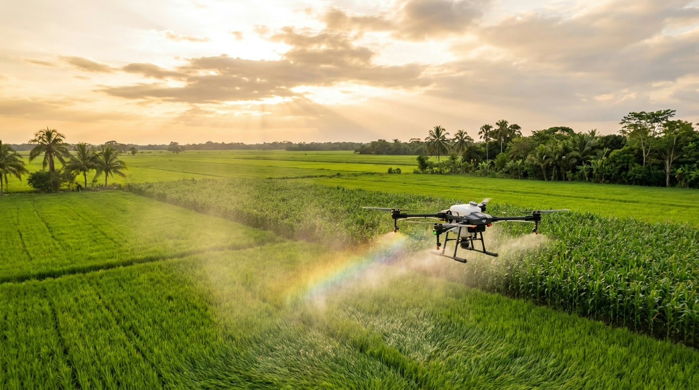

99% de cobertura
El flujo de aire de las hélices abre el follaje y lleva el producto al haz y envés de la hoja. Nada queda sin proteger.
Aplicaciones agrícolas de precisión con drones de última generación. Más cobertura, menos agua y resultados que se ven en cada hectárea.
Cobertura del cultivo en cada aplicación
Hectáreas fumigadas por día
Menos agua que la fumigación tradicional
Aplicación precisa y sin pisar el cultivo
Dejar la espalda y las botas en el pasado. El dron llega a donde el tractor y la bomba de espalda no pueden, con precisión milimétrica.
El flujo de aire de las hélices abre el follaje y lleva el producto al haz y envés de la hoja. Nada queda sin proteger.
Aplicación ultra-concentrada: hasta 90% menos agua por hectárea. Menos viajes al tanque, más rendimiento por jornada.
Vuelo autónomo con GPS-RTK y mapeo del lote. Dosis exacta, sin traslapes ni desperdicio de insumos.
Lo que a una cuadrilla le toma días, el dron lo hace en horas. Respondemos a tiempo cuando la plaga no espera.
El operario nunca entra en contacto con el agroquímico ni pisa terreno fangoso. Cero exposición, cero riesgo.
Sin maquinaria pesada compactando la tierra ni destruyendo surcos. Tu cultivo crece sano de raíz a espiga.
Acompañamos tu cosecha en cada etapa, con el dron como aliado principal del campo moderno.
Aplicación aérea de fungicidas, insecticidas y herbicidas con dosificación exacta según tu lote y tu plaga.
Nutrientes justo donde la planta los necesita, con cobertura uniforme para un desarrollo parejo del cultivo.
Siembra y aplicación de granulados, semillas y correctivos con el sistema de esparcido del dron.
Reconocimiento y planificación de vuelo por GPS para tratar solo lo que se necesita, sin desperdicio.
Aplicación dirigida en potreros, arroceras y grandes extensiones difíciles de recorrer a pie.
Te acompañamos para elegir producto, dosis y momento ideal de aplicación. Resultados, no adivinanzas.

Uno de los drones agrícolas más potentes del mercado. Diseñado para las grandes extensiones del llano, combina fuerza, autonomía y precisión en cada vuelo.
Así trabajamos en campo real: servicio de fumigación con dron, rápido, preciso y con el respaldo de un equipo que conoce la tierra llanera.
Ver más videos en TikTokDel arrozal a la palma, adaptamos el vuelo y la dosis a cada tipo de cultivo de la región.
Escríbenos por WhatsApp con la ubicación y el tipo de cultivo. Resolvemos tus dudas al instante.
Mapeamos el terreno y definimos producto, dosis y plan de vuelo ideal para tu necesidad.
Volamos de forma autónoma y precisa. Cobertura total en una fracción del tiempo habitual.
Te entregamos un cultivo protegido, uniforme y listo para rendir. Con soporte cuando lo necesites.
Cuéntanos qué necesitas fumigar y te damos una cotización clara y rápida. Atendemos Villavicencio y todos los Llanos Orientales.